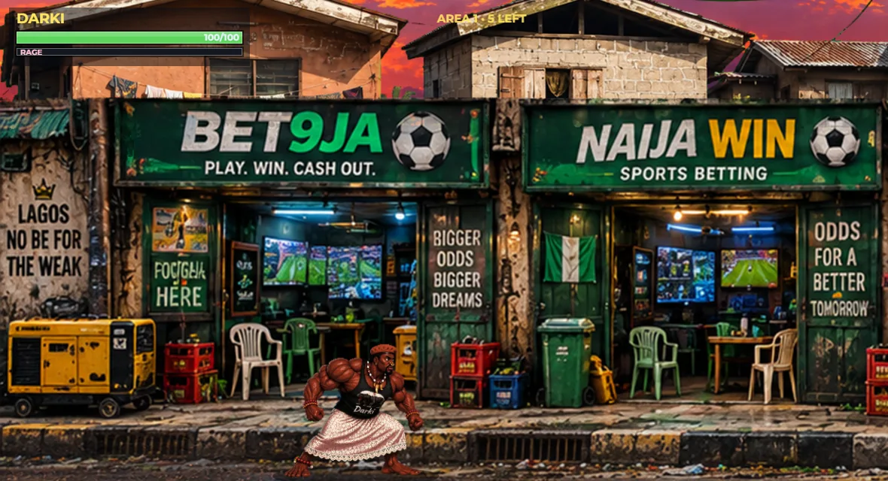
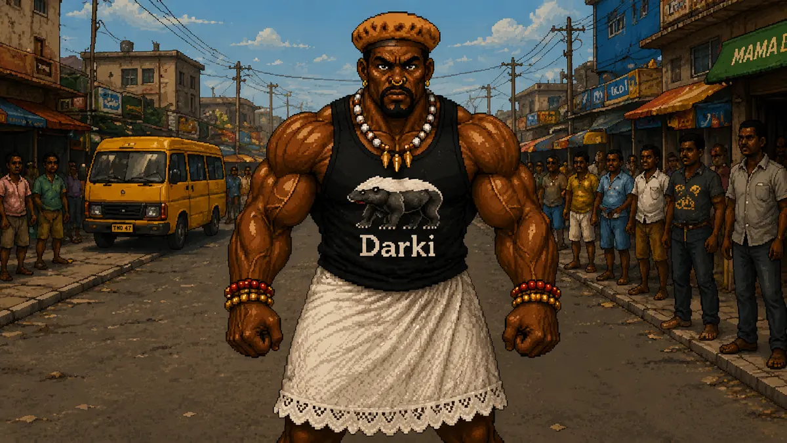

01 / Move
Work the lanes.
Move left and right, step into a different lane, and choose where the next clash happens.
// The game
A Nigerian-inspired 2D arcade brawler. One developed street mission is playable in the current browser prototype; the wider case is still being built.
// Actual gameplay

Captured from the running browser build · Level 0101 / Move
Move left and right, step into a different lane, and choose where the next clash happens.
02 / Attack
Jabs, an uppercut, kicks, grabs, and a rush give you more than one way through a crowd.
03 / Survive
Block the return shot, read the mob, and watch for the boss’s reinforcements.
// The roster

Street investigator. When MC Olodo’s crew demands its cut, Darki refuses. He follows the trouble further than the street corner.
Fighting style: close-range brawling, chained strikes, grabs, and defense.

A fictional motor park chairman collecting a “street tax” from drivers and traders. His enforcers make sure the demand is heard.
Encounter: a boss fight with retreat, reinforcements, and an enraged phase.

Olodo’s street muscle. Standard enforcers and senior reinforcements keep Darki from reaching the boss.
// Level 01 — The Street Tax
Danfo and keke traffic. Traders at work. A street tax enforced by Olodo’s crew. Darki steps in, says no, and the fight begins.
The next case points toward Commissioner Masood Jibril and a hidden Cabal. Distinct Level 02 combat and story content are still in development.
See the build status ↗
// How to play
Desktop browser controls from the current build. Mobile touch controls are being tuned in the Android playtest build.
// Why we’re making it
Ratel Rage takes the urgency of classic arcade brawlers and grounds it in a Nigerian street scene that feels lived in.
The Lagos setting is part of the fight: the traffic, the buildings, the people watching, and the power structures behind the first confrontation. We’re building the game in public through prototypes and playtests, then using player feedback to sharpen the combat and the next case.